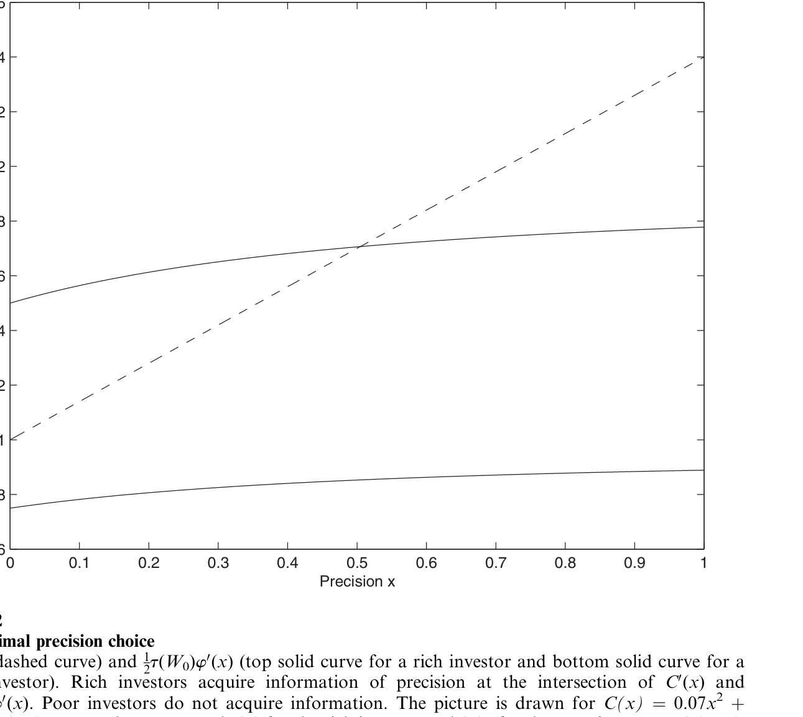
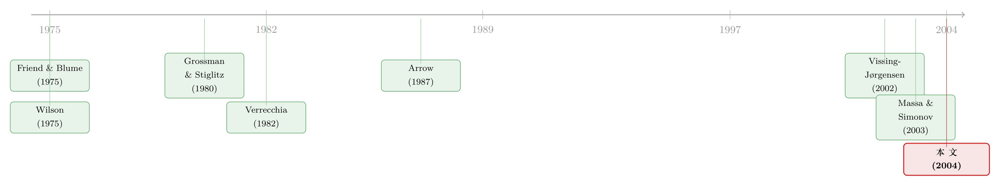

越有钱越敢买股票，真的是因为胆子更大吗？
本文读的是 Peress (2004, Review of Financial Studies)：富人把更大比例的财富投进股票，长期被归因于「相对风险厌恶随财富下降」。但这个假设在组合数据之外几乎找不到支持。作者把 Grossman–Stiglitz 经济推广到一般偏好下求解，给出一个更省的解释——只要绝对风险厌恶随财富下降，再加上「信息要花钱买」这一条，富人就会买更多信息、于是股票对他们而言更不"险"，组合份额自然更高——哪怕相对风险厌恶不变、甚至上升。
1 一个老观察，和一个站不住脚的老答案
先从一个几乎所有人都同意的事实说起。
把家庭按财富排序，你会发现：越有钱的家庭，投在股票里的财富比例越高。注意，这里说的不是绝对金额（有钱人买得多本不稀奇），而是份额——金融财富中投向风险资产的那一部分。这件事从 Cohn et al. (1975) 和 Friend and Blume (1975) 起就被反复记录，后来的研究换了数据、换了计量方法，结论依旧：组合份额对财富的弹性大约是 0.1。Vissing-Jørgensen (2002) 用 PSID 估出 0.09、0.12、0.10；Bertaut and Starr-McCluer (2002) 用 SCF 估出 0.17、0.04、0.06；Perraudin and Sørensen (2000) 给出 0.09。数字不大，但符号一致而稳健。
接着，一个自然的问题是：为什么？
教科书的标准答案是——相对风险厌恶 (relative risk aversion, RRA) 随财富下降。人越富，对"按比例的损失"越不敏感，于是敢把更大份额押在风险资产上。这套逻辑顺得让人几乎不想多问。一些作者（如 Morin and Suarez (1983)）干脆反过来用组合数据去"标定"偏好：看见份额随财富上升，就回推出 RRA 在下降。
但真正关键的一步在于：一旦你走出组合数据，去别的地方找证据，递减的相对风险厌恶 (decreasing relative risk aversion, DRRA) 几乎全军覆没。
- 农业经济学里，农民把土地分配到不同风险的作物上，本质和投资者把财富分配到证券上是同一道题。Saha, Shumway, and Talpaz (1994)、Bar-Shira, Just, and Zilberman (1997) 用不同数据和估计方法，都得到一个清晰的图景：绝对风险厌恶递减，相对风险厌恶递增。
- 问卷里，Barsky et al. (1997) 给受访者设计了带真实情境的赌局，发现 RRA 先升后降；Guiso and Paiella (2001) 用意大利央行调查问"你最多愿意花多少钱参加一个彩票"，答案显示绝对风险厌恶递减、相对风险厌恶递增。更要命的是：把风险资产份额对"测出来的风险厌恶 + 财富 + 人口学变量"一起回归，风险厌恶的系数显著为负、而财富的系数仍然显著为正——说明财富在通过某条不被风险厌恶捕捉的渠道起作用。
- 实验室里，Gordon, Paradis, and Rorke (1972)、Binswanger (1981)、Quizon, Binswanger, and Machina (1984) 给 MBA 学生或印度村民真金白银的赌局，结果是：财富越多，他们押上去的比例反而越小——又一次指向相对风险厌恶递增。
于是矛盾摆在桌面上：在能直接测风险态度的环境里，相对风险厌恶要么不变、要么上升；唯独在股票组合数据里，份额随财富上升、看起来像 DRRA。
这就是本文的张力所在。如果你只看组合，会以为是「富人没那么怕风险」；可一旦换个能独立测风险态度的场景，这个故事就垮了。那么——会不会份额上升根本不是偏好的事，而是别的东西在作祟？
2 核心想法：信息有「规模报酬」
作者给出的答案，落在一个被很多组合模型直接假设掉的环节上：信息不是免费的，而且要主动去买。
人们当然会为股票花钱买信息——读财经报纸、订阅 newsletter、请投资顾问。Lewellen, Lease, and Schlarbaum (1977) 调查一家美国大型零售券商的客户，发现花在金融期刊、研究服务、专业咨询上的钱随收入显著上升；Donkers and Van Soest (1999) 用荷兰调查里的"对财务事务的兴趣"变量，发现它和收入强正相关。会计研究也旁证了这一点：小额交易对盈余公告的反应弱于大额交易，暗示有钱的投资者（下大单的人）处理消息、调整仓位更快（Cready (1988)、Lee (1992)）。
把这条线索接进组合选择，整个故事就转了一个弯。核心只有一句话：
信息的价值，随你要投进去的金额上升；而信息的成本，不随金额变。
直觉极其朴素。假设你花同样的精力把一只股票研究透——这份"透"对你值多少钱？取决于你拿它去投多少。投 1 万块和投 100 万块，同一份判断带来的美元收益相差百倍；可买这份判断的票价是一样的。于是有钱人有动机买更多、更精的信息。
然后是真正反转的一步：买了更多信息之后，股票对这个投资者而言，确实变得更不险了——不是他偏好变了，而是他对回报的条件方差更小了。风险变小，他自然就敢把更大份额投进去，于是组合份额随财富上升。
请注意这个解释有多"省"：它不需要相对风险厌恶递减。它只需要绝对风险厌恶递减 (decreasing absolute risk aversion, DARA)——这一条，前面所有的农业、问卷、实验数据全都支持。它甚至可以和"相对风险厌恶不变（CRRA）"乃至"相对风险厌恶递增"和平共处。换句话说，本文把"组合数据看起来像 DRRA"这件事，重新解释成了「DARA + 信息购买」的合成产物。
（顺带一提：那些看起来在"买信息却更不分散"的散户，是另一条相关的暗线，可参见《算不清股票能赚多少的人，反而更敢买？》。）
3 模型：把财富效应请回 Grossman–Stiglitz
要把上面这个故事讲严谨，难点在哪？
难在：经典的理性预期 + 信息不对称模型——Grossman and Stiglitz (1980)、Verrecchia (1982)——为了得到漂亮的线性均衡，都假设了常绝对风险厌恶（CARA / 指数效用）。而 CARA 的代价正是：财富不进入需求。可财富偏偏是组合选择里最重要的变量。要谈财富效应，就必须扔掉 CARA、在一般偏好下求解——而一般偏好下，风险资产需求不再是期望收益的线性函数，闭式解通常不存在。
作者的破解办法是一个小风险近似 (small-risk approximation)：构造一个连续统的经济体，每个由参数 z 标度其风险、收益与交易成本，让股票的期望支付和方差都正比于 z（于是均值/方差比在整个连续统上不变），再令 z → 0 求闭式解。z 的角色，很像连续时间模型里的时间增量 dt。
三个时点。 计划期（t=0）、交易期（t=1）、消费期（t=2）。时序如下：t=0 选信息精度并付费；t=1 观察到私人信号与均衡价格，定下组合份额；t=2 消费。
两种资产。 无风险债券，净回报 rf·z；风险股票，价格 P、随机支付 \(\tilde P\) 服从对数正态。记 \(\tilde p z \equiv \ln \tilde P\)。一份额外的噪声来自噪声交易者的随机供给 u，它的存在保证了价格不会完全揭示私人信息——否则没人有动机花钱买信息。
信息结构。 投资者 j 可以买一个关于支付的信号：
$$S_j = \ln \tilde P + \varepsilon_j, \qquad \varepsilon_j \sim N\!\left(0,\ \frac{z}{x_j}\right)$$
其中 x_j 是信号精度。这份信号的票价是
$$C(x_j)\,z, \qquad C(0)=0,\ \ C'(\cdot)\ge 0,\ \ C''(\cdot)>0,\ \ \lim_{x\to\infty}C'(x)=+\infty$$
C 严格凸——每多买一点信息都比上一点更贵。这一点很重要：作者特意让成本凸，是为了堵住"结论靠成本的规模经济硬凑出来"的质疑。结果是，即便信息的生产技术是规模不经济的（凸成本），增加返回仍然出现——它来自需求侧（投得越多越值），而非供给侧。
偏好：唯一的实质假设。 绝对风险容忍度（绝对风险厌恶的倒数）随财富递增：
$$\tau(W_2)\equiv -\frac{U'(W_2)}{U''(W_2)}\ \text{ is increasing with } W_2$$
这就是 DARA，仅此而已。模型对相对风险厌恶不作任何假设。比如 CRRA 偏好 \(U(W_2)=\frac{W_2^{1-a}}{1-a}\) 就满足要求，此时 \(\tau(W_2)=\frac{W_2}{a}\)。
4 求解：份额方程里的「信息」藏在哪
把交易期的最优化（在 t=1，给定价格 P、信号 S_j 和已选精度 x_j，选份额 α_j 最大化 \(E[U(W_{2j})\,|\,\mathcal F_j]\)）解出来，在小风险近似下，投资者 j 的最优股票份额是论文的核心方程（式 7）：
读这条式子要抓两个地方。
第一，分子里的 τ(W_{1j})。 在 DARA 下，绝对风险容忍度随财富上升。但要小心：份额还除以了 W_{1j}，所以单看 \(\tau(W)/W\) 这一项，CRRA 下是常数、IRRA 下甚至递减——光靠偏好，份额并不会随财富上升。这正是本文与 DRRA 解释划清界限的地方。
第二，分母里的条件方差 \(V_j(\tilde p z\,|\,\mathcal F_j)\)。 这才是信息进场的入口。F_j 是投资者的信息集：买了私人信号就是 {S_j, P}，不买就是 {P}。买的信息越精（x_j 越大），条件方差越小，分母越小，份额 α_j 越大。
于是把两步接起来：有钱人因为投得多，在计划期选了更高的 x_j；更高的 x_j 在交易期压低了条件方差；条件方差一小，份额就被顶上去。 这条链路，完全绕开了"相对风险厌恶下降"。
那计划期的信息选择又凭什么随财富上升？回到 t=0 的问题：
$$\max_{x_j\ge 0}\ E\big[v(S_j, x_j, W_{1j};\,P)\big]$$
它的一阶条件，是在最优精度处，多买一点点精度带来的（期望效用）收益，恰好等于其边际成本 C'(x_j)。而这份边际收益里含着"你打算投多少"——投得多，同一点精度提升换来的美元收益就大；可右边的 C'(x_j) 与投多少无关。于是财富更高的人，把一阶条件推到了更高的 x_j 上。图 2 把这件事画了出来：边际收益曲线与边际成本曲线的交点，决定了最优精度，而财富的上升把边际收益曲线整条往上推。

Figure 2: and states that, at the optimum, the gain from a small increase
（关于"市场里越多人知情、反而越想知情"的动态版本，可参见《当「噪声」开始说话：动态市场里，越多人知情反而越想知情》。）
5 三个推论：份额、夏普比，以及不平等
模型一旦跑通，几个推论顺势就出来了。
其一，份额随财富上升——哪怕相对风险厌恶不降。 这是全文的主结论。"看起来像 DRRA"的组合份额模式，被重新解释为"DARA + 信息购买"。作者在第 6 节把模型标定到美国数据，并指出这套机制也适用于年龄、教育等其他与风险厌恶相关的变量——所以，从组合份额去反推风险厌恶的决定因素，要格外小心。
其二，一个能把两种解释区分开的、可检验的指纹：夏普比。 这是我最欣赏的一笔。两套理论对份额给出相同的预测（都随财富上升），看组合份额本身分不出胜负。但它们对组合的夏普比 (Sharpe ratio) 给出不同预测：
- 在 DRRA 模型里，所有人面对的是同一套（公开）信息，富人只是少厌恶一点风险，于是承担更多风险、但夏普比相同；
- 在信息模型里，富人买了更精的信息，他们的组合期望收益更高、方差更高、且夏普比更高。
也就是说——夏普比是否随财富上升，是分辨"胆子大"与"情报多"的试金石。 Massa and Simonov (2003) 用一份覆盖瑞典家庭的综合数据，报告夏普比确实随金融财富上升，与信息模型一致。作者也诚实地补一句：还需要更多研究来确认。
其三，信息会放大不平等。 因为信息带来增加返回，股票需求是财富的凸函数。于是财富分布越不均，股价越高；反过来，富人拿到更高的期望收益、更高的方差、更高的夏普比，最终财富（无论按期望财富还是确定性等价衡量）的分布，比初始财富分布更不均。一句话：可花钱买的信息，会加剧财富不平等。
6 文献脉络
把这条线索摊开看，本文站在两股潮流的交汇处。
一股是财富与组合份额的实证传统：从 Cohn et al. (1975)、Friend and Blume (1975) 记录"份额随财富上升"，到 Vissing-Jørgensen (2002)、Perraudin and Sørensen (2000) 把弹性钉在 0.1 附近，并仔细把"份额选择"从"是否参与"中分离出来。与之并行的，是一批在组合数据之外测风险态度的研究（农业的 Saha et al. (1994)、问卷的 Barsky et al. (1997)、Guiso and Paiella (2001)、实验的 Binswanger (1981)），它们共同把 DRRA 这个假设推到了墙角。
另一股是信息获取与理性预期：Grossman and Stiglitz (1980) 奠定了"价格部分揭示私人信息"的框架，Verrecchia (1982) 让投资者连续地选择信号精度——但两者都困在 CARA 里，财富无从进入。而"信息有规模报酬"的想法本身并不新，Wilson (1975)、Arrow (1987) 早已提出，只是从未被放进一个"私人信息被公开价格部分揭示"的股票市场结构里。

本文做的，正是把这两股潮流接上：在 Grossman–Stiglitz–Verrecchia 的结构里，用小风险近似松开 CARA 的枷锁，让财富效应回到模型，从而用「DARA + 信息购买」给那个 30 年的组合份额之谜，提供了一个不依赖 DRRA 的替代解释。（关于"私人信息如何在国际市场里随投资者类型分布"，可参见《你以为美国人在「追涨」外国股票，其实他们手里攥着一份全球情报》。）
7 评论与延伸（Q&A + 研究方向）
(a) 几个可能的疑问
Q：这套机制是不是偷偷在"信息技术里"塞了规模经济，才让份额上升的？
没有。作者把成本函数设成严格凸（\(C''>0\)，且 \(C'\to\infty\)），刻意排除了供给侧的规模经济。增加返回完全来自需求侧——同一份精度，投得越多越值钱，而票价不随金额变。文中明确说，放松凸性、允许非凸成本只会强化结论，而非制造结论。
Q：DARA 和 DRRA 到底差在哪，凭什么前者就"可信"？
绝对风险厌恶 \(-U''/U'\) 衡量你对"固定美元损失"的态度，相对风险厌恶 \(-W U''/U'\) 衡量对"按比例损失"的态度。DARA（绝对风险容忍度递增）几乎被所有独立测风险态度的数据支持——农业、问卷、实验一致；而 DRRA 只在组合数据里"看起来成立"，在别处屡被拒绝。本文的巧妙就在于：只借用那条被广泛支持的 DARA，把组合里那条看似 DRRA 的模式解释掉。
Q：份额预测两套模型都一样，凭什么说本文能被检验、而不只是又一个观测等价的故事？
关键正是夏普比这个额外维度。份额上两套理论观测等价，但信息模型预测"富人组合的夏普比更高"，DRRA 模型预测"夏普比与财富无关"。这是一个能把两者区分开的、可证伪的预测。Massa and Simonov (2003) 的瑞典证据偏向信息模型——虽然作者也承认证据还单薄。
Q：模型是静态的，这会不会漏掉重要的东西？
会。作者自己点明：模型是静态的，因此不含对冲需求 (hedging demand)——这是动态组合选择里很重要的一块，通常要在带 CARA 的动态模型里处理。所以本文是在"放开 CARA 以纳入财富效应"和"保留动态对冲"之间做了取舍，它选了前者。
Q：小风险近似（z → 0）会不会让结论只在"风险极小"的玩具世界里成立？
这是结构上最该警惕的地方。
z → 0是为了拿到闭式解而做的局部近似，类似连续时间里的dt。它让推导变得干净，但代价是结论严格成立只在风险趋近于零的极限附近；离开这个邻域多远仍然管用，是个经验问题。作者把附录留给了稳健性检验，但读者有理由对"大风险"区间的外推保持谨慎。
Q：富人份额更高，会不会其实是固定参与成本或心理偏差造成的，而不是信息？
作者在第 6 节专门讨论并试图排除了基于固定进入成本和心理偏差的替代解释。当然，"信息购买"和"参与成本"在精神上是近亲——都是某种摩擦让财富进入了决策。区分它们需要更细的微观数据（比如直接观测信息支出）。关于参与成本如何决定"要不要进场"，可参见《"不买股票"也能是理性的吗？——给参与成本算一笔最省的账》。
(b) 几个可能的研究问题与提案
1）把"夏普比随财富上升"这条指纹，搬到公司债持有人上检验。
【经济故事】本文最锋利的可检验预测是"信息→更高夏普比"。股票市场已有 Massa-Simonov 的初步证据，但公司债市场（信息更不对称、定价更依赖私人尽调）可能是更干净的试验场：大机构投入的信用研究资源远超小账户，若信息模型对，则大持有人的信用组合应有更高的风险调整后收益。 【可行性】中。需要持有人层面的债券组合 + 收益数据（如保险公司 NAIC 持仓、或某资管的内部账本），识别上要小心规模与流动性溢价的混淆——大持有人的"超额夏普"可能部分来自流动性补偿而非信息。
2）外资 vs 本地投资者：谁在"买信息"，谁只是"承担风险"？
【经济故事】关于外资是否有信息劣势，文献长期争论。本文给了一个新角度：不看份额、看夏普比。如果某类投资者（比如本地大机构）系统性地拥有更高的风险调整后收益，那更像"情报多"而非"胆子大"。 【可行性】中。需要按投资者国籍/类型拆分的成交与持仓数据（如韩国、瑞典的账户级数据）。本博客已有不少相关证据可对照，例如《外资真有「信息劣势」吗？——首尔交易簿里那 37 个基点的真相》。难点是把信息效应从交易经验、行为偏差中干净剥离。
3）信息购买如何放大流动性危机中的财富再分配？
【经济故事】本文证明信息会加剧不平等。把它动态化：在市场承压、信息价值飙升的时刻（如 2020 年 3 月），有能力买信息的大机构是否系统性地从小账户手里"接走"了风险调整后的收益？这会把"流动性危机"和"财富不平等"连成一条线。 【可行性】中偏低。需要危机窗口内的高频持仓变动数据，识别上要区分"信息优势"与"单纯的资金/流动性优势"。可与公司债危机研究对照，如《差点死掉的那个市场：一场公司债流动性危机的微观解剖》。
4）直接测"信息支出"，给机制做一次正面检验。
【经济故事】本文的机制核心是"信息支出随财富上升、且带来更精的判断"。Lewellen et al. (1977) 的老调查给了间接证据，但今天有更好的代理变量（研报订阅、数据终端开支、投顾费用）。若能把"信息支出"直接放进份额与夏普比回归，就能把"信息渠道"与"风险厌恶渠道"正面分开。 【可行性】中。需要把信息支出数据匹配到组合表现（券商或财富管理机构的内部数据最理想）。这是把一个理论机制"做实"的直接路径，doable，但数据获取是主要门槛。
我的判断
这篇文章的贡献，与其说是"提出了一个新模型"，不如说是给一个被默认了三十年的解释，找到了一个更省的替代品，并且——这才是它真正值钱的地方——给出了一条能把两者区分开的、可检验的预测（夏普比随财富的走向）。理论替代解释多如牛毛，但绝大多数与原解释观测等价、无从证伪；本文偏偏在份额之外多挤出了一个维度，这是方法论上的漂亮。把 Grossman–Stiglitz 从 CARA 的牢笼里放出来、让财富效应回到理性预期模型，本身也是一份不小的技术贡献。
我的担忧主要落在识别与近似两处。其一，小风险近似（z → 0）让模型可解，但也意味着结论严格只在风险趋零的极限附近成立；现实中的股票风险离零并不近，外推多远仍可靠，文章没有、也很难给出硬答案。其二，实证支撑还很薄——本文的核心检验靠的是 Massa and Simonov (2003) 一篇工作论文里的一个相关性，离"证实"尚远。而且"信息购买"与"参与成本""模型不确定性"等其它能让财富进入决策的摩擦，在精神上高度近亲，要把它们彼此分开，需要的微观数据比文章动用的多得多。
后续我最想看到的，是有人直接把信息支出测出来、放进份额与夏普比回归，让"信息渠道"从一个优雅的理论假说，变成一个被数据正面验证（或证伪）的事实。在这一点上，那些算不准均值、干脆退出股市的投资者，提供了一个有趣的反向参照（见《算不准均值的那群人，悄悄退出了股市——一个把「有限参与」内生出来的模型》）。
参考文献
Arrow, K. (1987). The Demand for Information and the Distribution of Income. Probability in the Engineering and the Informational Sciences 1, 3–13.
Barsky, R., F. T. Juster, M. Kimball, and M. Shapiro (1997). Preference Parameters and Behavioral Heterogeneity: An Experimental Approach in the Health and Retirement Study. Quarterly Journal of Economics 112(2), 537–579.
Bar-Shira, Z., R. Just, and D. Zilberman (1997). Estimation of Farmers' Risk Attitude: An Econometric Approach. Agricultural Economics 17, 211–222.
Bertaut, C., and M. Starr-McCluer (2002). Household Portfolios in the United States. In L. Guiso, M. Haliassos, and T. Jappelli (eds.), Household Portfolios, MIT Press.
Binswanger, H. (1981). Attitudes Toward Risk: Theoretical Implications of an Experiment in Rural India. Economic Journal 91, 867–890.
Cohn, R. A., W. G. Lewellen, R. C. Lease, and G. G. Schlarbaum (1975). Individual Investor Risk Aversion and Investment Portfolio Composition. Journal of Finance 30(2), 605–620.
Friend, I., and M. E. Blume (1975). The Demand for Risky Assets. American Economic Review 65, 900–921.
Grossman, S. J., and J. E. Stiglitz (1980). On the Impossibility of Informationally Efficient Markets. American Economic Review 70, 393–408.
Guiso, L., and M. Paiella (2001). Risk Aversion, Wealth and Background Risk. Discussion Paper, CEPR.
Lewellen, W., R. Lease, and G. Schlarbaum (1977). Patterns of Investment Strategy and Behavior Among Individual Investors. Journal of Business 50, 296–333.
Massa, M., and S. Simonov (2003). Behavioral Biases and Investment. Working paper, INSEAD.
Morin, R., and A. Suarez (1983). Risk Aversion Revisited. Journal of Finance 38, 1201–1216.
Peress, J. (2004). Wealth, Information Acquisition, and Portfolio Choice. Review of Financial Studies 17(3), 879–914.
Perraudin, W., and B. Sørensen (2000). The Demand for Risky Assets: Sample Selection and Household Portfolios. Journal of Econometrics 97, 117–144.
Saha, A., R. Shumway, and H. Talpaz (1994). Joint Estimation of Risk Preferences Structure and Technology Using Expo-Power Utility. American Journal of Agricultural Economics 76, 173–184.
Verrecchia, R. E. (1982). Information Acquisition in a Noisy Rational Expectations Economy. Econometrica 50, 1415–1430.
Vissing-Jørgensen, A. (2002). Towards an Explanation of Household Portfolio Choice Heterogeneity: Non-Financial Income and Participation Cost Structures. Working paper, Kellogg School of Management.
Wilson, R. (1975). Informational Economies of Scale. Bell Journal of Economics 6, 184–195.